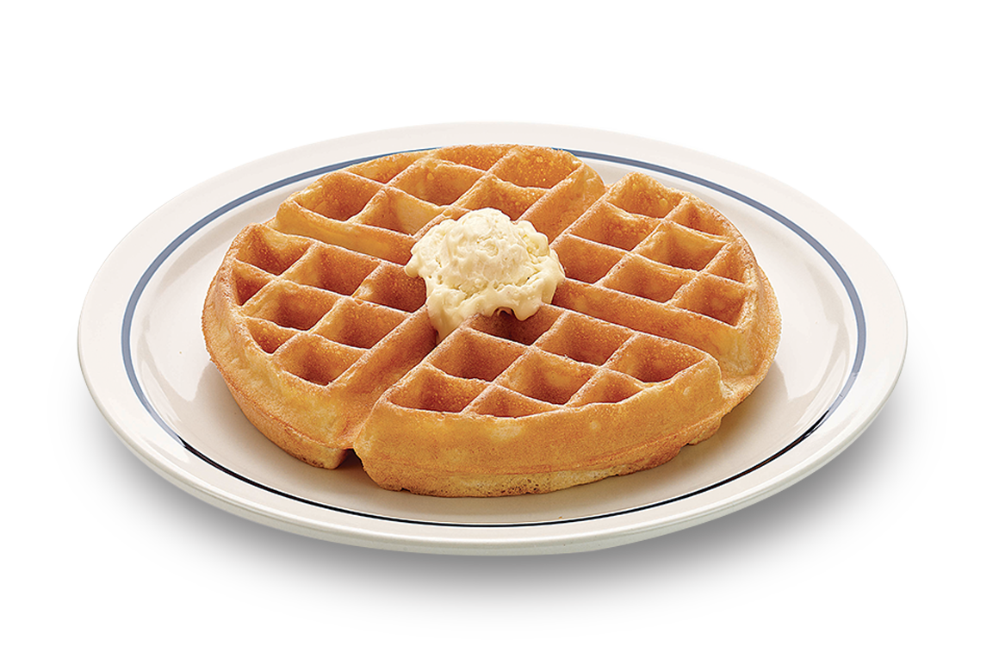
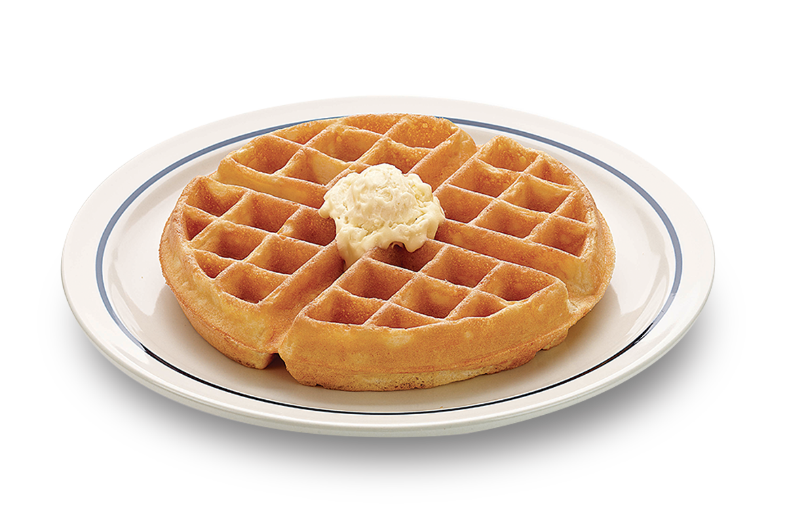
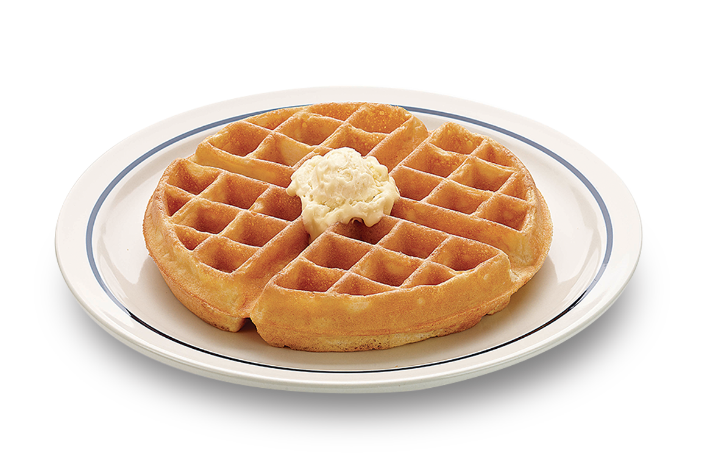
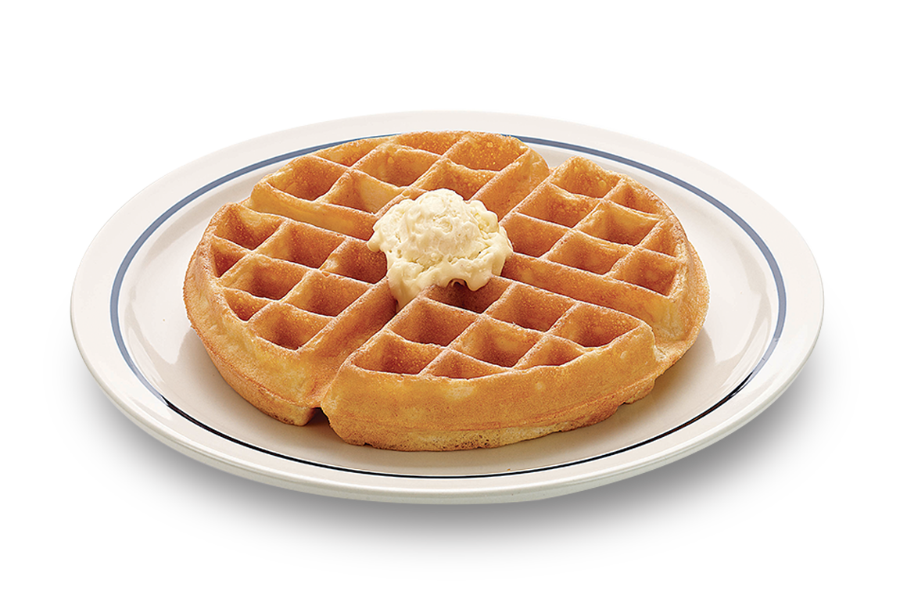

BELGIUM
 



Belgium is a federal state divided into three regions: Dutch-speaking Flanders in the north, francophone Wallonia in the south and Brussels, the bilingual capital, where French and Dutch share official status. There is also a small German-speaking minority in the eastern part of the country. Belgium’s varied landscape includes: 67 kilometres of sea coast and flat coastal plains along the North Sea, a central plateau and the rolling hills and forests of the Ardennes region in the south. The most important sectors of Belgium’s economy in 2015 were public administration, defence, education, human health and social work activities (22.5 %), wholesale and retail trade, transport, accommodation and food services (19.7 %) and industry (16.3 %). Belgium’s main export partners are Germany, France and the Netherlands while its main import partners are the Netherlands, Germany and France.
Capital: Brussels
Geographical size: 30 528 km2
Population: 11 258 434 (2015)
Population as % of total EU: 2.2 % (2015)
Gross domestic product (GDP): € 409.407 billion (2015)
Official EU language(s): Dutch, French and German
Political system: federal parliamentary constitutional monarchy
EU member country since: 1 January 1958
Seats in the European Parliament: 21
Currency: Euro. Member of the eurozone since 1 January 1999
Schengen area member: Schengen Area member since 26 March 1995.
Presidency of the Council: Belgium has held the revolving presidency of the Council of the EU 12 times between 1958 and 2010.
The national flag of Belgium (Dutch: Vlag van België, French: Drapeau de la Belgique, German: Flagge Belgiens) is a tricolour of three bands of black, yellow, and red. The colours were taken from the coat of arms of the Duchy of Brabant, and the vertical design may be based on the flag of France. When flown, the black band is nearest the pole (at the hoist side). It has the unusual proportions of 13:15. On August 26, 1830, the day after the rioting at the Brussels Opera and the start of the Belgian Revolution, the flag of France flew from the city hall of Brussels. The insurgents hastily replaced it with a tricolour of red, yellow and black horizontal stripes (similar to the one used during the Brabant Revolution of 1789-1790 which had established the United States of Belgium) made at a nearby fabric store. As a result, Article 193 of the Constitution of Belgium describes the colours of the Belgian nation as Red, Yellow and Black instead of using the order shown in the official flag.On January 23, 1831, the stripes changed from horizontal to vertical, and on October 12 the flag attained its modern form, with the black placed at the hoist side of the flag. The official guide to protocol in Belgium states that the national flag measures 2.60 m tall for each 3 m wide,giving it a ratio of 13:15. Each of the stripes is one-third of the width of the flag. The yellow is in fact yellow and not the darker gold of the flag of Germany, which is a somewhat similar black-red-gold tricolour.
Belgium's fascinating capital, and the administrative capital of the EU, Brussels is historic yet hip, bureaucratic yet bizarre, self confident yet unshowy, and multicultural to its roots. All this plays out in a cityscape that swings from majestic to quirky to rundown and back again. Organic art nouveau facades face off against 1960s concrete developments, and regal 19th-century mansions contrast with the brutal glass of the EU’s Gotham City. This whole maelstrom swirls out from Brussels’ medieval core, where the Grand Place is surely one of the world’s most beautiful squares.
Belgium’s second city and biggest port is Antwerp (Antwerpen/Anvers in Dutch/French) and without a doubt, this charming city is the country’s capital of cool. It's long been a powerful magnet for everyone from fashion moguls and club queens to art lovers and diamond dealers. In the mid-16th century it was one of Europe’s most important cities and home to baroque superstar painter Pieter Paul Rubens, as you’ll be regularly reminded – there are numerous places to admire his works across the city. Despite many historical travails thereafter and severe WWII bombing, Antwerp retains an intriguing medieval heart with plenty of café-filled cobbled lanes, a riverside fortress and a truly impressive cathedral. Today Antwerp’s top drawcards are its truly vibrant fashion and entertainment scene, along with its startling architectural and cultural contrasts.
Mechelen is a city and municipality in the province of Antwerp, Flanders, Belgium. The municipality comprises the city of Mechelen proper, some quarters at its outskirts, the hamlets of Nekkerspoel (adjacent) and Battel (a few kilometers away), as well as the villages of Walem, Heffen, Leest, Hombeek, and Muizen. The Dyle (Dutch: Dijle) flows through the city, hence it is often referred to as the Dijlestad ("City on the river Dijle").Mechelen lies on the major urban and industrial axis Brussels–Antwerp, about 25 km from each city. Inhabitants find employment at Mechelen's southern industrial and northern office estates, as well as at offices or industry near the capital and Zaventem Airport, or at industrial plants near Antwerp's seaport.
Ghent is a city and a municipality in the Flemish Region of Belgium. It is the capital and largest city of the East Flanders province and after Antwerp the largest municipality of Belgium. The city started as a settlement at the confluence of the Rivers Scheldt and Leie and in the Late Middle Ages became one of the largest and richest cities of northern Europe, with some 50,000 people in 1300. It is a port and university city.
Brugge is the capital and largest city of the province of West Flanders in the Flemish Region of Belgium, in the northwest of the country.The area of the whole city amounts to more than 13,840 hectares, including 1,075 hectares off the coast, at Zeebrugge (from Brugge aan zee meaning "Bruges on Sea". The historic city centre is a prominent World Heritage Site of UNESCO. It is oval and about 430 hectares in size. The city's total population is 117,073 (1 January 2008), of whom around 20,000 live in the city centre. The metropolitan area, including the outer commuter zone, covers an area of 616 km2 (238 sq mi) and has a total of 255,844 inhabitants as of 1 January 2008. Along with a few other canal-based northern cities, such as Amsterdam and Stockholm, it is sometimes referred to as The Venice of the North. Bruges has a significant economic importance thanks to its port and was once one of the world's chief commercial cities. Bruges is well known as the seat of the College of Europe, an elite university institute for European studies regarded as "the EU's very own Oxbridge.

Mons is a Belgian city and municipality, and the capital of the province of Hainaut. The Mons municipality includes the former communes of Cuesmes, Flénu, Ghlin, Hyon, Nimy, Obourg, Jemappes, Ciply, Harmignies, Harveng, Havré, Maisières, Mesvin, Nouvelles, Saint-Denis, Saint-Symphorien, Spiennes and Villers-Saint-Ghislain. Together with the Czech city of Plzeň, Mons was the European Capital of Culture in 2015.
The city is situated in the valley of the Meuse River, in the east of Belgium, not far from borders with the Netherlands (Maastricht is about 33 km (20.5 mi) to the north) and with Germany (Aachen is about 53 km (32.9 mi) north-east). At Liège the Meuse river meets the river Ourthe. The city is part of the sillon industriel, the former industrial backbone of Wallonia. It still is the principal economic and cultural centre of the region.
Leuven is the capital of the province of Flemish Brabant in Belgium. It is located about 25 kilometres (16 miles) east of Brussels. The municipality itself comprises the historic city and the former neighboring municipalities of Heverlee, Kessel-Lo, a part of Korbeek-Lo, Wilsele and Wijgmaal. It is the 8th largest city in Belgium and the fourth in Flanders with more than 100,244 inhabitants.
Wavre is a city and municipality in the Belgian province of Walloon Brabant, of which it is the capital.Wavre is in the Dyle valley. Most inhabitants speak French as their mother tongue and are called "Wavriens" and "Wavriennes". The municipality includes the sub-municipalities of Limal and Bierges.Wavre is also called "the City of the Maca", referring to the statue of the small boy who tries to climb the wall of the city hall. Tradition holds that touching the Maca's buttocks brings a year of luck.
Belgium is the fatherland of quality beer brewing, creating a huge variety of beer styles from well established Pale Ales, Saisons, Tripels and Dubbels to the more unusual Flemish sours, Lambics and Geuzes.It is also the spiritual home of Trappist beer as it can claim 6 of the 11 breweries in the world where Trappist monks lovingly craft beer (and usually cheese) to support the charitable works of their monastery. The tradition of having a specific design of beer glass also originates here as each brewery insisted on the local surroundings serving their beer in a particular type of glass. Even to this day the Belgian beer scene is hugely regionalized around the local brewery with most pubs and restaurants in an area promoting the local beer. With such a rich history Belgium is therefore the place to go for any true beer lover wanting to sample the delights of Westmalle, Duvel, St Bernardus, Rochefort, Bosteels Kwak, Delirium Tremens, Maredsous, Rodenbach….the list goes on!
Belgium enjoys a reputation among chocolate aficionados that is only rivalled by Switzerland. Indeed, these two countries are the only places where the use of “chocolate” is legally restricted to products containing only cocoa butter, cocoa solids, sugar and milk. Today, around 172,000 tonnes of chocolate products are manufactured each year in Belgium, by around 500 different manufacturers, sold through 2,000 specialist shops. Average annual sales equate to 8kg per head of population, though many of these sales are to foreign tourists or are export sales.
Belgium enjoys a reputation among chocolate aficionados that is only rivalled by Switzerland. Indeed, these two countries are the only places where the use of “chocolate” is legally restricted to products containing only cocoa butter, cocoa solids, sugar and milk. Today, around 172,000 tonnes of chocolate products are manufactured each year in Belgium, by around 500 different manufacturers, sold through 2,000 specialist shops. Average annual sales equate to 8kg per head of population, though many of these sales are to foreign tourists or are export sales.
The name French fries implies that this dish can be traced back to France; however, the origins of this ubiquitous dish can be traced back to Belgium. It is rumored that French fries received that name during WWI. At that time, American soldiers were introduced to the fried potatoes in Belgium, but because they thought they were situated in France (due to the fact that part of Belgium speaks French), the soldiers nicknamed these fried potatoes as French fries, instead of calling them fried potatoes.Belgians eat their frites preferably with their fingers or with small plastic forks; it is typical to serve them with a dollop of sauce. You can visit any town or city in Belgium and order frites, which may be served in a paper cone to be enjoyed while exploring the city. Tasting this famed dish is definitely a must for tourists!